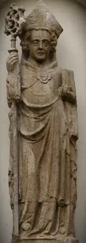
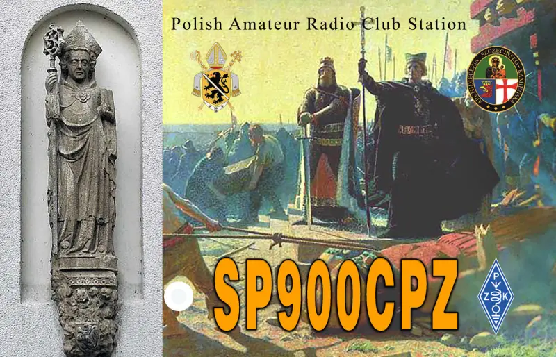
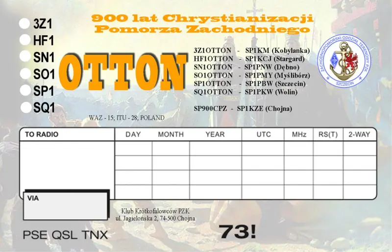
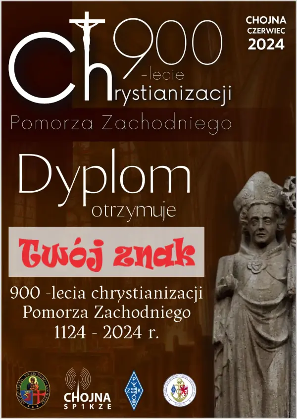

Instrukcja pobrania dyplomu
Dla ułatwienia podajemy, jak można pobrać szybko swój dyplom.- Wpisujemy swój znak w miesce podane na zdjęciu na tej stronie.
- Klikamy w napis "POBIERZ DYPLOM".


Mija 900 lat
od Chrystianizacji Pomorza Zachodniego

15 czerwca 1124 roku w Pyrzycach bp. Otton z Bambergu, zwany Apostołem Pomorza, dokonał chrztu pierwszych pogan na Pomorzu Zachodnim. Otton dobrze przygotował się do tej misji: utrzymywał kontakty z wpływowymi osobami, prowadził imponujące wystąpienia, głosił katechezę przed chrzcielną i umacniał swoje dzieło poprzez budowę kościołów i mianowanie kapłanów.
Otton, urodzony około 1061 roku, pochodził z pobożnej rodziny szwabskiej. Jego rodzice, Otton i Adelajda, byli częścią europejskiej szlachty. Otton przybył do Polski około 1080 roku i przebywał tam do 1097 roku, gdzie uczył młodzieży i pełnił rolę posła.
Po śmierci Judyty czeskiej, matki Bolesława Krzywoustego, Otton zasugerował małżeństwo między Władysławem Hermanem a Judytą Salicką, siostrą cesarza Henryka IV. Otton został kapelanem Judyty, ale na prośbę cesarza Henryka IV wrócił do Niemiec, gdzie został mianowany biskupem bamberskim.
Kiedy Bolesław III Krzywousty podbił Pomorze Zachodnie w latach 1121-1122, jednym z warunków pokoju było przyjęcie chrześcijaństwa przez poddanych Warcisława I. Kiedy książę pomorski nie był w stanie tego zrealizować, Bolesław III poprosił o pomoc biskupa Ottona. Misja ewangelizacyjna na Pomorzu była sukcesem, co przyniosło Ottonowi tytuł Apostoła Pomorza.
 {kind=link}
{kind=link}
DYPLOM "900 lat
Chrystianizacji Pomorza Zachodniego”

{kind=link}
W dniach 03 czerwca do 02 lipca 2024 roku przeprowadziliśmy akcję dyplomową.
Pracowało 8 klubowych stacji okolicznościowych dających punkty niezbędne do uzyskania dyplomu "900 lat Chrystianizacji Pomorza Zachodniego”. To była doskonała okazja do wielu łączności, aktywności radiowej, ale i przypomnienia o tym wydarzeniu.
Przygotowaliśmy wersje oficjalnego regulaminu dyplomu "900 lat Chrystianizacji Pomorza
Zachodniego” - do pobrania i tłumaczenia - linki poniżej.
- pobierz (W języku polskim)
Szczegółowy regulamin obowiązujący w czasie akcji w formacie Word do przejrzenia na swoim komputerze. - download (In English language)
A detailed set of rules applicable during the event in Word format for review on your computer. - herunterladen (Auf Deutsch)
Eine detaillierte Satzung, die während der Aktion in Word-Format gilt, zur Überprüfung auf Ihrem Computer. - завантажити (українською мовою)
Детальні правила та положення, що діють під час акції, у форматі pdf для перегляду на вашому комп'ютері.
Regulamin dyplomu
15 czerwca 2024 roku, przypada okrągła 900 rocznica pierwszej z dwóch misji
chrystianizacyjnych Pomorza, które z polecenia Bolesława III Krzywoustego podjął Otton, biskup z
Bambergu.
- Nazwa dyplomu:"900 lat Chrystianizacji Pomorza Zachodniego”.
- Cel: uczczenie 900 lat chrystianizacji Pomorza Zachodniego.
- Organizator: Klub PZK SP1KZE w Chojnie.
- Patronat honorowy: ZOT PZK, Diecezja Szczecińsko-Kamieńska oraz Archidiecezja Bambergu.
- Termin akcji radiowej: od 03 czerwca do 02 lipca 2024 roku.
- Pasma i emisje dowolne: 160-6+WARC, zalicza się powtórki łączności na tym samym paśmie, lecz inną emisją.
- Stacje okolicznościowe biorące udział w akcji dyplomowej, każda ze stacji przyznaje:
- 300 punktów za jedno QSO SP900CPZ– SP1KZE, łączność obowiązkowa;
- 100 punktów za jedno QSO:
- 3Z1OTTON - SP1KM Kobylanka;
- HF1OTTON – SP1KCJ Stargard;
- SN1OTTON – SP1PNW Dębno;
- SO1OTTON – SP1PMY Myślibórz;
- SP1OTTON – SP1PBW Szczecin;
- SQ1OTTON – SP1PKW Wolin;
- DL0OB - Bamberg.
- Punktacja. Stacje z SP i EU muszą zdobyć 900 punktów, natomiast stacje DX-owe 500 punktów.
- W dniu 15.06.2024 r. stacje okolicznościowe przyznają podwójną liczbę punktów.
- Dyplom jest dostępny również dla stacji SWL.
- Dyplom jest bezpłatny i wydawany wyłącznie w formie elektronicznej poprzez platformę internetową
po spełnieniu wymaganych warunków na stronie
https://logsp.pzk.org.pl.
Stacje SWL przesyłają swoje logi elektronicznie via e-mail sp1kze@wp.pl do 15 lipca 2024r. - Potwierdzenie łączności w formie kart QSL nie są wymagane.
- Zainteresowani wymianą kart QSL lub potwierdzeniem łączności ze stacjami okolicznościowymi poprzez biuro ZOT14 lub elektronicznie via QRZ.COM każdej ze stacji okolicznościowych.
- Zdobywcy pierwszego miejsca w poszczególnych kategoriach „TOP Challenge” otrzymają pamiątkowe
grawertony:
- dla najlepszej polskiej stacji;
- dla najlepszej europejskiej stacji;
- dla najlepszej DX-owej (spoza EU) stacji.
- Wszelkie zapytania w sprawie dyplomu lub regulaminu należy kierować na e-mail sp1kze@wp.pl.
- Stacja organizatora oraz stacje współpracujące nie będą klasyfikowane.
- Award Manager SP1XM Marcin e-mail sp1xm@wp.pl
Diploma Regulations
June 15, 2024, marks the round 900th anniversary of the first of two Christianization
missions of Pomerania, which were undertaken by Otto, bishop of Bamberg, on the orders of Boleslaw
III Wrymouth.
- Diploma name: "900 lat Chrystianizacji Pomorza Zachodniego”
(900 years of Christianization of Western Pomerania) . - Goal: to commemorate 900 years of Christianization of Western Pomerania.
- Organizer: PZK Club SP1KZE in Chojna.
- Honorary patronage: ZOT PZK, Szczecin-Kamien Diocese and Archdiocese of Bamberg.
- Radio action dates: from June 3 to July 2, 2024.
- Any bands and emissions: 160-6+WARC, repeats of connections on the same band, but different emission, are counted.
- Special event stations participating in the diploma action, each station awards:
- 300 points for one QSO SP900CPZ– SP1KZE, mandatory connection;
- 100 points for one QSO:
- 3Z1OTTON - SP1KM Kobylanka;
- HF1OTTON – SP1KCJ Stargard;
- SN1OTTON – SP1PNW Debno;
- SO1OTTON – SP1PMY Mysliborz;
- SP1OTTON – SP1PBW Szczecin;
- SQ1OTTON – SP1PKW Wolin;
- DL0OB - Bamberg.
- Scoring. Stations from SP and EU must score 900 points, while DX stations 500 points.
- On June 15, 2024, special event stations award double points.
- The diploma is also available for SWL stations.
- The diploma is free and issued only electronically through the online platform after meeting the
required conditions on the website https://logsp.pzk.org.pl.
SWL stations send their electronic logs via e-mail sp1kze@wp.pl until July 15, 2024. - Confirmation of connections in the form of QSL cards are not required.
- Those interested in exchanging QSL cards or confirming connections with special event stations through the ZOT14 office or electronically via QRZ.COM of each of the special event stations.
- The winners of the first place in the respective categories "TOP Challenge" will receive
commemorative plaques:
- for the best Polish station;
- for the best European station;
- for the best DX (outside EU) station.
- All inquiries about the diploma or regulations should be directed to e-mail sp1kze@wp.pl.
- The organizer's station and cooperating stations will not be classified.
- Award Manager SP1XM Marcin e-mail sp1xm@wp.pl
Reglement
DIPLOM aus Anlass
"900 Jahre der Christianisierung
von West Pommern”
Am 15. Juni 2024 jährt sich zum 900 Mal der erste von zwei Christianisierungsmissionen Pommerns, die von Otto, Bischof von Bamberg, auf Befehl von Boleslaw III Wrymouth durchgeführt wurden.
- Bezeichnumng des Diploms: "900 lat Chrystianizacji Pomorza Zachodniego” ("900 Jahre Christianisierung von Westpommern").
- Zweck: Ehrung 900 Jahre der Christianisierung von West Pommern.
- Organisator: Amateurfunkclub des PZK SP1KZE in Chojna.
- Ehren Schirmherrschaft: Distrikt West Pommern des PZK, Diözese Stettin-Kamien und Erzdiözese Bamberg.
- Termin des Funkbetriebes: Vom 03. Juni bis zun 02. Juli 2024.
- Bänder und alle Betriebsarten: 160-6+WARC, gezählt werden auch wiederholte Verbindungen auf dem gleichen Band, jedoch in einer anderen Betriebsart.
- Sonderstationen der Diplomaktion vergeben::
- SP900CPZ – SP1KZE, Pflichtverbindung - 300 Punkte für ein QSO;
- 100 Punkte für ein QSO:
- 3Z1OTTON - SP1KM Kobylanka;
- HF1OTTON – SP1KCJ Stargard;
- SN1OTTON – SP1PNW Debno;
- SO1OTTON – SP1PMY Mysliborz;
- SP1OTTON – SP1PBW Szczecin;
- SQ1OTTON – SP1PKW Wolin;
- DL0OB - Bamberg.
- Punktezahl: Stationen aus SP und EU müssen 900 Punkte, DX-Stationen 500 Punkte erreichen.
- Am 15.06.2024 vergeben die Sonderstationen die doppelte Punktezahl.
- Das Diplom kann auch von SWL-Stationen erworben werden.
- Das Diplom ist Kostenlos und wird ausschließlich in elektronischer Form über die
Internetplattform https://logsp.pzk.org.pl
nach Erfüllung
der Diplombedingungen, erteilt..
SWL-Stationen senden ihre Log’s elektronisch via e-mail an sp1kze@wp.pl bis zum 15. Juli 2024r. - Bestätigungen von Verbindungen in Form von QSL-Karten sind nicht erforderlich.
- Interessierte am QSL-Kartenaustausch oder die Bestätigung der Verbindungmit den Sonderstationen sind über das QSL-Büro ZOT14 oder elektronisch via QRZ.COM für jede Sonderstation möglich.
- Die ersten Plätze in den einzelnen Kategorieen „TOP Challenge” erhalten eine Gravierplakette:
- für die beste polnische Station;
- für die beste europäische Station;
- für die beste DX- Station (außerhalb EU).
- Sämtliche Anfragen bezüglich des Diploms oder der Ausschreibung sind zu richten als e-Mail an sp1kze@wp.pl.
- Stationen des Organisators oder Mitarbeitenden werden nicht Klazifiziert.
- Award Manager SP1XM Marcin E-Mail sp1xm@wp.pl
Règlement du diplôme
Le 15 juin 2024 marque le 900e anniversaire de la première des deux missions de
christianisation de la Poméranie, entreprise par Otton, évêque de Bamberg, sur ordre de Bolesław III
Wrymouth.
- Nom du diplôme :"900 lat Chrystianizacji Pomorza Zachodniego” (900 ans de Christianisation de la Poméranie Occidentale).
- Objectif : célébrer les 900 ans de la christianisation de la Poméranie occidentale.
- Organisateur : Club PZK SP1KZE à Chojna.
- Patronage honorifique : ZOT PZK, Diocèse de Szczecin-Kamien et Archidiocèse de Bamberg.
- Date de l'action radio : du 3 juin au 2 juillet 2024.
- Bandes et émissions libres : 160-6+WARC, les répétitions de communication sur la même bande, mais avec une autre émission, sont comptabilisées.
- Stations commémoratives participant à l'action du diplôme, chaque station attribue :
- 300 points pour un QSO SP900CPZ– SP1KZE, communication obligatoire;
- 100 points pour un QSO :
- 3Z1OTTON - SP1KM Kobylanka;
- HF1OTTON – SP1KCJ Stargard;
- SN1OTTON – SP1PNW Debno;
- SO1OTTON – SP1PMY Mysliborz;
- SP1OTTON – SP1PBW Szczecin;
- SQ1OTTON – SP1PKW Wolin;
- DL0OB - Bamberg.
- Pointage. Les stations de SP et EU doivent obtenir 900 points, tandis que les stations DX doivent obtenir 500 points.
- Le 15.06.2024, les stations commémoratives attribuent le double de points.
- Le diplôme est également disponible pour les stations SWL.
- Le diplôme est gratuit et délivré uniquement sous forme électronique via la plateforme internet
après avoir rempli les conditions requises sur le site
https://logsp.pzk.org.pl.
Les stations SWL envoient leurs logs électroniquement via e-mail à sp1kze@wp.pl avant le 15 juillet 2024. - La confirmation des communications sous forme de cartes QSL n'est pas nécessaire.
- Ceux qui sont intéressés par l'échange de cartes QSL ou la confirmation des communications avec les stations commémoratives par le bureau ZOT14 ou électroniquement via QRZ.COM de chaque station commémorative.
- Les gagnants de la première place dans les différentes catégories "TOP Challenge" recevront des
gravures commémoratives :
- pour la meilleure station polonaise;
- pour la meilleure station européenne;
- pour la meilleure station DX (hors EU).
- Toutes les questions concernant le diplôme ou le règlement doivent être adressées par e-mail à sp1kze@wp.pl.
- La station organisatrice et les stations collaboratrices ne seront pas classées.
- Award Manager SP1XM Marcin e-mail sp1xm@wp.pl
REGULACE
DIPLOMA NA PŘÍLEŽITOST
"900 lat Chrystianizacji Pomorza Zachodniego”
V nadcházejícím roce 2024, 15. června, připadá kulaté 900. výročí první z dvou misí Christianizace Pomořanska, které na pokyn Boleslawa III. Krzywoustego podnikl Otton, biskup z Bambergu.
- Název diplomu: "900 lat Chrystianizacji Pomorza Zachodniego” ("900 let Christianizace Západního Pomořanska).
- Cíl: oslavit 900 let Christianizace Západního Pomořanska.
- Organizátor: Klub PZK SP1KZE v Chojně.
- Čestný patronát: ZOT PZK, Diecéze Szczecin-Kamien a Arcidiecéze Bamberg.
- Termín rozhlasové akce: od 3. června do 2. července 2024.
- Pásmo a emise libovolné: 160-6+WARC, opakované spojení na stejném pásmu, ale jinou emisí, se započítává.
- Stanice příležitostné účastnící se v akci diplomové, každá ze stanic uděluje:
- SP900CPZ – SP1KZE, povinné spojení - 300 bodů za jedno QSO;
- 100 bodů za jedno QSO:
- 3Z1OTTON - SP1KM Kobylanka;
- HF1OTTON – SP1KCJ Stargard;
- SN1OTTON – SP1PNW Debno;
- SO1OTTON – SP1PMY Mysliborz;
- SP1OTTON – SP1PBW Szczecin;
- SQ1OTTON – SP1PKW Wolin;
- DL0OB - Bamberg.
- Bodování. Stanice z SP a EU musí získat 900 bodů, zatímco stanice DX 500 bodů.
- Dne 15.06.2024 příležitostné stanice udělují dvojnásobný počet bodů.
- Diplom je k dispozici také pro stanice SWL.
- Diplom je zdarma a je vydáván pouze elektronicky prostřednictvím internetové platformy po splnění požadovaných podmínek na stránce https://logsp.pzk.org.pl. Stanice SWL zasílají své logy elektronicky prostřednictvím e-mailu sp1kze@wp.pl do 15. července 2024.
- Potvrzení spojení ve formě QSL karet není vyžadováno.
- Zájemci o výměnu QSL karet nebo potvrzení spojení s příležitostnými stanicemi prostřednictvím kanceláře ZOT14 nebo elektronicky prostřednictvím QRZ.COM každé z příležitostných stanic.
- Vítězové prvního místa v jednotlivých kategoriích „TOP Challenge” obdrží pamětní grawertony: - pro nejlepší polskou stanici; - pro nejlepší evropskou stanici; - pro nejlepší DX stanici (mimo EU).
- Všechny dotazy týkající se diplomu nebo regulace by měly být směrovány na e-mail sp1kze@wp.pl.
- Organizační stanice a spolupracující stanice nebudou klasifikovány.
- Award Manager SP1XM Marcin e-mail sp1xm@wp.pl
ディプロマの規則
2024年6月15日は、ボレスワフ3世クシヴォウスティの命令で、バンベルクの司教オットーが開始したポメラニアのキリスト教化の二つの使命の最初の900周年を迎えます。
- ディプロマの名前："900 lat Chrystianizacji Pomorza Zachodniego”
（西ポメラニアのキリスト教化900年）. - 目的：西ポメラニアのキリスト教化900年を祝う。
- 主催者：PZKクラブSP1KZE in Chojna.
- 名誉パトロン：ZOT PZK、シュチェチン・カミェンスカ教区およびバンベルク大教区。
- ラジオアクションの期間：2024年6月3日から7月2日まで.
- 任意のバンドとエミッション：160-6+WARC、同じバンドでの接続のリピートがカウントされますが、エミッションは異なります。
- ディプロマアクションに参加する特別イベントステーション、各ステーションは以下を授与します：
- 一つのQSO SP900CPZ– SP1KZEに対して300ポイント、接続は必須;
- 一つのQSOに対して100ポイント：
- 3Z1OTTON - SP1KM Kobylanka;
- HF1OTTON – SP1KCJ Stargard;
- SN1OTTON – SP1PNW Debno;
- SO1OTTON – SP1PMY Mysliborz;
- SP1OTTON – SP1PBW Szczecin;
- SQ1OTTON – SP1PKW Wolin;
- DL0OB - Bamberg.
- スコアリング。SPとEUのステーションは900ポイントを獲得する必要があり、DXステーションは500ポイントを獲得する必要があります。
- 2024年6月15日には、特別イベントステーションはポイントを二倍にします。
- ディプロマはSWLステーションでも利用可能です。
- ディプロマは無料で、必要な条件を満たした後にオンラインプラットフォームを通じて電子的にのみ発行されます。ウェブサイト https://logsp.pzk.org.pl。
SWLステーションは、電子ログをeメールsp1kze@wp.plで2024年7月15日まで送信します。 - QSLカードの形での接続の確認は必要ありません。
- QSLカードの交換または特別イベントステーションとの接続の確認に興味がある人は、ZOT14オフィスまたはQRZ.COMを通じて電子的に各特別イベントステーションと交換します。
- 各カテゴリーの「TOP Challenge」で一位を獲得した人々は、記念のプラークを受け取ります：
- 最優秀ポーランドステーション用;
- 最優秀ヨーロッパステーション用;
- 最優秀DX（EU外）ステーション用.
- ディプロマまたは規則に関するすべての問い合わせは、eメールsp1kze@wp.plに送る必要があります。
- 主催者のステーションおよび協力ステーションは分類されません。
- Award Manager SP1XM Marcin e-mail sp1xm@wp.pl